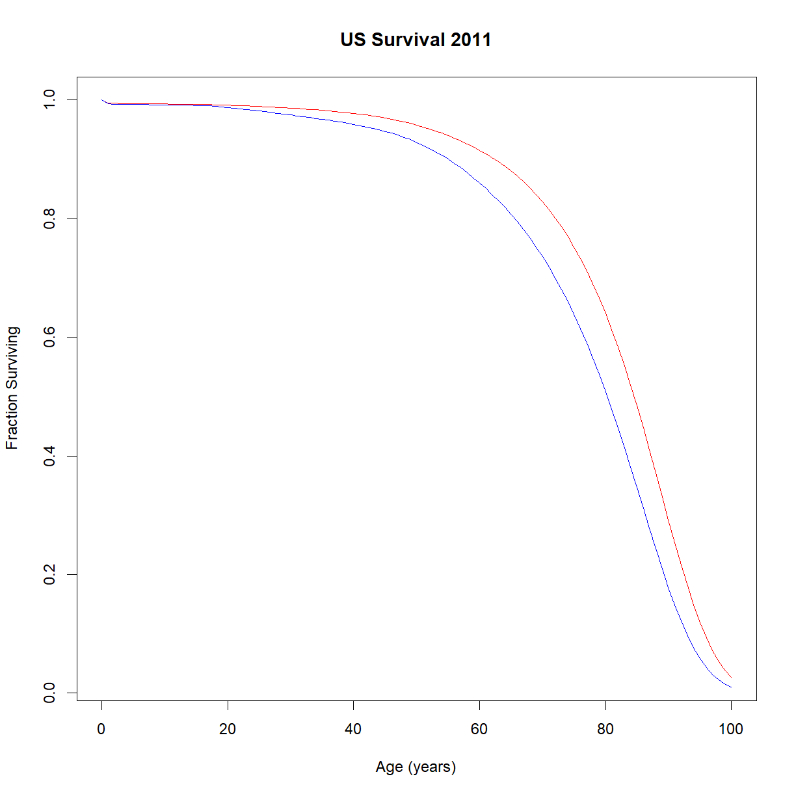

Advanced Survival Analysis
Overview
Class Date: 9/19/2023 -- On Your Own
Teaching: 90 min
Exercises: 30 minQuestions
How do you extract life table information from
survfit()objects in R?How do you plot age-specific mortality (aka the hazard function) when a life table is not provided?
Objectives
Understand the process for extracting life table information from the object created by the
survfit()function.Use this information to plot age-specific mortality.
Practice using
Surv(),survfit(), andsurvdiff()on available data.
On Your Own
Working with survival data in R is not straightforward and practice is useful for getting the hang of using the Surv() object and the functions for generating survival curves and running log-rank tests. For the most part, today’s On Your Own material consists of additional exercise, with one practical note for dealing with an odd data structure.
Extracting life table data from survfit()
In Class we looked at a life table for human mortality in the US. We were able to examine the age-specific \(\mu_x\) (aka the hazard function \(\lambda(t)\), which is one useful way to evaluate differences between groups in survival data. Because the log of age-specific mortality increases linearly with age, the intercept of this line can be interpreted as “initial mortality” in a population, and the slope as “rate of aging” (aka the rate at which the chance of dying at a given time increases with age).
If we want to examine age-specific mortality for a survival dataset where the life table is not pre-built for us, R does not provide a straightforward solution. There is no function in R to directly plot \(\mu_x\), so we have to extract the life tables and calculate it manually. Let’s revisity the lifespan data for the BUB/BnJ mouse strain that we looked at In Class.
# load the survival package
library("survival")
# read in inbred strain lifespan data and subset ou thet BUB/BnJ strain
data.surv <- read.delim("data/inbred.lifespan.txt")
surv.bub <- data.surv[data.surv$strain == "BUB/BnJ",]
# calculate life table for BUB/BnJ mice with sex as an independent variable
survfit.bub.sex <- survfit(Surv(lifespan_days, censor == 0) ~ sex, data=surv.bub)
# use summary() to capture the life table in a new variable
summary.bub <- summary(survfit.bub.sex)
summary.bub
Call: survfit(formula = Surv(lifespan_days, censor == 0) ~ sex, data = surv.bub)
sex=f
time n.risk n.event survival std.err lower 95% CI upper 95% CI
266 24 1 0.9583 0.0408 0.88163 1.000
279 23 1 0.9167 0.0564 0.81250 1.000
328 22 1 0.8750 0.0675 0.75221 1.000
343 21 1 0.8333 0.0761 0.69681 0.997
357 20 1 0.7917 0.0829 0.64478 0.972
455 19 1 0.7500 0.0884 0.59531 0.945
457 18 1 0.7083 0.0928 0.54795 0.916
495 17 1 0.6667 0.0962 0.50240 0.885
523 16 1 0.6250 0.0988 0.45845 0.852
538 15 1 0.5833 0.1006 0.41598 0.818
551 14 1 0.5417 0.1017 0.37489 0.783
621 13 1 0.5000 0.1021 0.33513 0.746
628 12 1 0.4583 0.1017 0.29668 0.708
635 11 1 0.4167 0.1006 0.25954 0.669
670 10 1 0.3750 0.0988 0.22373 0.629
678 9 1 0.3333 0.0962 0.18930 0.587
722 8 1 0.2917 0.0928 0.15636 0.544
726 7 1 0.2500 0.0884 0.12502 0.500
810 6 1 0.2083 0.0829 0.09551 0.454
818 5 1 0.1667 0.0761 0.06813 0.408
867 4 1 0.1250 0.0675 0.04337 0.360
904 3 1 0.0833 0.0564 0.02211 0.314
965 2 1 0.0417 0.0408 0.00612 0.284
1034 1 1 0.0000 NaN NA NA
sex=m
time n.risk n.event survival std.err lower 95% CI upper 95% CI
260 28 1 0.9643 0.0351 0.89794 1.000
287 24 1 0.9241 0.0517 0.82807 1.000
301 23 1 0.8839 0.0632 0.76836 1.000
307 22 1 0.8438 0.0720 0.71386 0.997
341 21 1 0.8036 0.0790 0.66280 0.974
354 20 2 0.7232 0.0892 0.56792 0.921
366 18 1 0.6830 0.0929 0.52328 0.892
383 16 1 0.6403 0.0964 0.47678 0.860
426 15 1 0.5977 0.0989 0.43205 0.827
447 14 1 0.5550 0.1007 0.38893 0.792
493 13 1 0.5123 0.1016 0.34732 0.756
608 12 1 0.4696 0.1017 0.30718 0.718
693 11 2 0.3842 0.0995 0.23125 0.638
768 9 1 0.3415 0.0972 0.19552 0.597
855 8 1 0.2988 0.0939 0.16137 0.553
873 7 1 0.2561 0.0897 0.12894 0.509
874 6 1 0.2134 0.0843 0.09843 0.463
875 5 1 0.1708 0.0775 0.07016 0.416
888 4 1 0.1281 0.0689 0.04463 0.368
889 3 2 0.0427 0.0417 0.00628 0.290
1020 1 1 0.0000 NaN NA NA
Let’s take a closer look at the structure of the life tables stored in the summary.bub object:
str(summary.bub)
List of 19
$ n : int [1:2] 32 32
$ time : num [1:45] 266 279 328 343 357 455 457 495 523 538 ...
$ n.risk : num [1:45] 24 23 22 21 20 19 18 17 16 15 ...
$ n.event : num [1:45] 1 1 1 1 1 1 1 1 1 1 ...
$ n.censor : num [1:45] 8 0 0 0 0 0 0 0 0 0 ...
$ surv : num [1:45] 0.958 0.917 0.875 0.833 0.792 ...
$ std.err : num [1:45] 0.0408 0.0564 0.0675 0.0761 0.0829 ...
$ cumhaz : num [1:45] 0.0417 0.0851 0.1306 0.1782 0.2282 ...
$ std.chaz : num [1:45] 0.0417 0.0602 0.0754 0.0892 0.1023 ...
$ strata : Factor w/ 2 levels "sex=f","sex=m": 1 1 1 1 1 1 1 1 1 1 ...
$ type : chr "right"
$ logse : logi TRUE
$ conf.int : num 0.95
$ conf.type : chr "log"
$ lower : num [1:45] 0.882 0.813 0.752 0.697 0.645 ...
$ upper : num [1:45] 1 1 1 0.997 0.972 ...
$ call : language survfit(formula = Surv(lifespan_days, censor == 0) ~ sex, data = surv.bub)
$ table : num [1:2, 1:9] 32 32 32 32 32 ...
..- attr(*, "dimnames")=List of 2
.. ..$ : chr [1:2] "sex=f" "sex=m"
.. ..$ : chr [1:9] "records" "n.max" "n.start" "events" ...
$ rmean.endtime: num [1:2] 1034 1034
- attr(*, "class")= chr "summary.survfit"
This object has a variable called strata that defines the groups by which the comparison is broken down, and thus the defining feature for the two separate life tables stored within the object. You can use this to extract the separate life table columns for each sex from summary.bub. Here we will just extract the specific columns that we need to calculate \(\mu_x\):
# extract age, number of deaths, and number at risk at each age from the
# life tables stored in `summary.bub`. Note that the names assigned to the
# "strata" are in the form "<variable>=<value>", so we use "sex=f" to extract
# the information for female mice
age.f <- summary.bub$time[summary.bub$strata == "sex=f"]
n.event.f <- summary.bub$n.event[summary.bub$strata == "sex=f"]
n.risk.f <- summary.bub$n.risk[summary.bub$strata == "sex=f"]
# calculate qt; note that this is an alternative way to get qx from using the
# lx and lx+1 values. If you rearrange the life table equations you can derive
# this form.
qx.f <- n.event.f/n.risk.f
# now calculate px and mux (mu is age-specific mortality)
px.f <- 1 - qx.f
mux.f <- -log(px.f)
# for the male mice ("sex=m"), I am just going to combine the above few steps
# into a single step.
age.m <- summary.bub$time[summary.bub$strata == "sex=m"]
mux.m <- -log(1 - summary.bub$n.event[summary.bub$strata == "sex=m"]/summary.bub$n.risk[summary.bub$strata == "sex=m"])
# Now we can finally plot. Someone should write a function to do this...
# Remember to put the y-axis on a log scale.
plot(age.f,mux.f, col = "red", log = "y", type="o", pch = 16, lwd = 1.7,
xlab = "Age", ylab = "Age-Specific Mortality",
xlim = c(min(summary.bub$time),max(summary.bub$time)))
lines(age.m,mux.m, col = "blue", type="o", pch = 16, lwd = 1.7)
legend("bottomright",legend = c("female","male"), fill = c("red","blue"))

Note that these plots can be somewhat sensitive to time periods during the lifespan where few mice died (particularly the early portion), creating odd jumps and jogs like the one present near the early male lifespan. Pay attention to the general trends (slope, intercept) to get a feel for how the groups differ. In this case, It looks like the male and female BUB/BnJ mice are pretty similar, showing a similar intercept and slope for the log-mortality curves.
Exercises
Differences in male vs. female survival and mortality in modern US humans
Earlier we looked at survival and mortality in the US population. Now let’s see how these differ by sex. Plot male and female survival and age-specific mortality on the same plot for comparison. The life tables are stored in
US2011.life.table.male.txtandUS2011.life.table.female.txt, respectively.Solution
# load data lt.male <- read.delim("./data/US2011.life.table.male.txt") lt.female <- read.delim("./data/US2011.life.table.female.txt") # change names to our convention names(lt.male) <- c("t","qt","nt","dt","Lt","Tt","et") # calculate lt, pt, and lambdat lt.male$lt <- lt.male$nt/max(lt.male$nt) lt.male$pt <- 1 - lt.male$qt lt.male$lambdat <- -log(lt.male$pt) # change names to our convention (lx -> nx) names(lt.female) <- c("t","qt","nt","dt","Lt","Tt","et") # calculate lt, pt, and lambdat lt.female$lt <- lt.female$nt/max(lt.female$nt) lt.female$pt <- 1 - lt.female$qt lt.female$lambdat <- -log(lt.female$pt) # plot survival curves plot(lt.female$t, lt.female$lt, type = "l", col = "red", main="US Survival 2011", xlab="Age (years)",ylab="Fraction Surviving") lines(lt.male$t, lt.male$lt,col="blue")
# plot age-specific mortality plot(lt.female$t, lt.female$lambdat, type = "l", col="red",log="y", main="US Age-Specific Mortality 2011", xlab="Age (years)", ylab="Age-Specific mortality") lines(lt.male$t, lt.male$lambdat, col="blue")

Leukemia – log-rank test (survdiff function)
The survival package includes the Acute Myelogenous Leukemia (AML) survival dataset. Open the help for
amlfor a description of the data. the “x” column indicates whether a particular chemotherapy treatment was continued/maintained or discontinued.
- Open and examine the data, and plot a Kaplan-Meier curve for all data.
- Plot the Kaplan-Meier curves broken down by treatment, and calculate the Log-Rank P-value to determine whether the differences are signifcant.
- Extra challenge: extract the life tables for treated and untreated individuals and plot age-specific morality
The data is stored in the
amldataframe, which is loaded with thesurvivalpackage.*Note: unlike our mouse data, the
statusvariable indicates whether a patient has died, not patients that were censored. Be sure to indicate this appropriately in theSurv()object:Surv(time, status == 1).Solution
# load the survival package library("survival") # Examine the data head(aml)time status x 1 9 1 Maintained 2 13 1 Maintained 3 13 0 Maintained 4 18 1 Maintained 5 23 1 Maintained 6 28 0 Maintained# Create the life table for the aml data (all combined) survfit.aml <- survfit(Surv(time, status == 1) ~ 1, data=aml) summary(survfit.aml)Call: survfit(formula = Surv(time, status == 1) ~ 1, data = aml) time n.risk n.event survival std.err lower 95% CI upper 95% CI 5 23 2 0.9130 0.0588 0.8049 1.000 8 21 2 0.8261 0.0790 0.6848 0.996 9 19 1 0.7826 0.0860 0.6310 0.971 12 18 1 0.7391 0.0916 0.5798 0.942 13 17 1 0.6957 0.0959 0.5309 0.912 18 14 1 0.6460 0.1011 0.4753 0.878 23 13 2 0.5466 0.1073 0.3721 0.803 27 11 1 0.4969 0.1084 0.3240 0.762 30 9 1 0.4417 0.1095 0.2717 0.718 31 8 1 0.3865 0.1089 0.2225 0.671 33 7 1 0.3313 0.1064 0.1765 0.622 34 6 1 0.2761 0.1020 0.1338 0.569 43 5 1 0.2208 0.0954 0.0947 0.515 45 4 1 0.1656 0.0860 0.0598 0.458 48 2 1 0.0828 0.0727 0.0148 0.462# Plot the basic Kaplan-Meier curve for aml. Don't print the confidence interval. # We'll leave the 95% confidence intervals in place for fun. plot(survfit.aml, xlab = "Time (weeks)", ylab="Fraction surviving", mark.time = TRUE, main="Survival in AML")
# Create aml life tables and KM plots broken out by treatment (x, "Maintained" vs. "Not maintained") survfit.aml.by.rx <- survfit(Surv(time, status == 1) ~ x, data = aml) summary(survfit.aml.by.rx)Call: survfit(formula = Surv(time, status == 1) ~ x, data = aml) x=Maintained time n.risk n.event survival std.err lower 95% CI upper 95% CI 9 11 1 0.909 0.0867 0.7541 1.000 13 10 1 0.818 0.1163 0.6192 1.000 18 8 1 0.716 0.1397 0.4884 1.000 23 7 1 0.614 0.1526 0.3769 0.999 31 5 1 0.491 0.1642 0.2549 0.946 34 4 1 0.368 0.1627 0.1549 0.875 48 2 1 0.184 0.1535 0.0359 0.944 x=Nonmaintained time n.risk n.event survival std.err lower 95% CI upper 95% CI 5 12 2 0.8333 0.1076 0.6470 1.000 8 10 2 0.6667 0.1361 0.4468 0.995 12 8 1 0.5833 0.1423 0.3616 0.941 23 6 1 0.4861 0.1481 0.2675 0.883 27 5 1 0.3889 0.1470 0.1854 0.816 30 4 1 0.2917 0.1387 0.1148 0.741 33 3 1 0.1944 0.1219 0.0569 0.664 43 2 1 0.0972 0.0919 0.0153 0.620 45 1 1 0.0000 NaN NA NA# Plot KM broken out by treatment plot(survfit.aml.by.rx, xlab = "Time", ylab="Survival", col = c("black", "red"), lty = 1:2, main = "Kaplan-Meier Survival vs. Maintenance in AML") # Add a legend so we know which is which legend("topright", c("Maintained", "Not maintained"), lty = 1:2, col=c("black", "red"))
# Perform the log rank test using the R function survdiff(). aml.survdiff <- survdiff(Surv(time, status == 1) ~ x, data=aml) aml.survdiffCall: survdiff(formula = Surv(time, status == 1) ~ x, data = aml) N Observed Expected (O-E)^2/E (O-E)^2/V x=Maintained 11 7 10.69 1.27 3.4 x=Nonmaintained 12 11 7.31 1.86 3.4 Chisq= 3.4 on 1 degrees of freedom, p= 0.07Extra challenge: calculate and plot age-specific mortality (\(\mu_x\)) for the above groups.
# first we need to assign the life table summary to an object aml.lt <- summary(survfit.aml.by.rx) # extract age, and number of deaths and number at risk at each age from the # survfit object. We'll do the "Maintained" group first. For some reason the summary # is formatted in rows with a weird notation. It creates a new variable that combines # the header from our original input data with the value in the column; in this case # "x=Maintained" and "x=Nonmaintained". We have to use this to separate out the data age.main <- aml.lt$time[aml.lt$strata == "x=Maintained"] n.event.main <- aml.lt$n.event[aml.lt$strata == "x=Maintained"] n.risk.main <- aml.lt$n.risk[aml.lt$strata == "x=Maintained"] # calculate qt; note that this is an alternative way to get qx from using the lx and # lx+1 values. If you rearrange the life table equations you can derive this form. qx.main <- n.event.main/n.risk.main # now calculate px and mux (mu is age-specific mortality) px.main <- 1 - qx.main mux.main <- -log(px.main) # for the non-maintenance group, I am just going to combine the above few steps # into a single step. age.nomain <- aml.lt$time[aml.lt$strata == "x=Nonmaintained"] mux.nomain <- -log(1 - aml.lt$n.event[aml.lt$strata == "x=Nonmaintained"]/aml.lt$n.risk[aml.lt$strata == "x=Nonmaintained"]) # Now we can finally plot. Someone should write a function to do this... # Remember to put the y-axis on a log scale. plot(age.main,mux.main, col = "blue", log = "y", type="o", pch = 16, lwd = 1.7, xlab = "Age", ylab = "Age-Specific Mortality", xlim = c(min(aml.lt$time),max(aml.lt$time))) lines(age.nomain,mux.nomain, col = "red", type="o", pch = 16, lwd = 1.7) legend("bottomright",legend = c("Maintained","Nonmaintained"), fill = c("blue","red"))


Revisiting levamisole treatment in colon cancer
In Class we looked at the colon cancer dataset (
colon) that is included with thesurvivalpackage in R, and concluded that this dataset supports the idea that levamisole treatment improves survival in colon cancer patients when combined with 5-FU. Let’s take a closer look at the data and see what more we can learn.library("survival") # make sure you have the library loaded str(colon)'data.frame': 1858 obs. of 16 variables: $ id : num 1 1 2 2 3 3 4 4 5 5 ... $ study : num 1 1 1 1 1 1 1 1 1 1 ... $ rx : Factor w/ 3 levels "Obs","Lev","Lev+5FU": 3 3 3 3 1 1 3 3 1 1 ... $ sex : num 1 1 1 1 0 0 0 0 1 1 ... $ age : num 43 43 63 63 71 71 66 66 69 69 ... $ obstruct: num 0 0 0 0 0 0 1 1 0 0 ... $ perfor : num 0 0 0 0 0 0 0 0 0 0 ... $ adhere : num 0 0 0 0 1 1 0 0 0 0 ... $ nodes : num 5 5 1 1 7 7 6 6 22 22 ... $ status : num 1 1 0 0 1 1 1 1 1 1 ... $ differ : num 2 2 2 2 2 2 2 2 2 2 ... $ extent : num 3 3 3 3 2 2 3 3 3 3 ... $ surg : num 0 0 0 0 0 0 1 1 1 1 ... $ node4 : num 1 1 0 0 1 1 1 1 1 1 ... $ time : num 1521 968 3087 3087 963 ... $ etype : num 2 1 2 1 2 1 2 1 2 1 ...
Based on the
?colondescription, in addition to the information on recurrence and survival, we have data on the differention status of the tumor cells, an indicator of tumor grade (poorly differentiated tumors are higher grade and more aggressive) stored in thediffervariable.How does the effectiveness of levamisole at prolonging survival differ across patients with different tumor grades?
Hint
If you examine the
differvariable, we don’t have data on tumor grade for all patients. In this case, we will want to remove allNAvalues from the > > data set up front.Solution
Again, we will start by taking a look at the survival curves for each tumor grade. We can do this using a
forloop and building a 3-panel figure:.# like before, we will grab just the subset of data for the "death" events, # since we are not looking at recurrence in this exercise colon.death <- colon[colon$etype == 2,] # note that some patients do not have information on tumor grade. There are # various ways to look at this, but let's use the table function with useNA # set to "ifany". You could also just display the `differ` variable, or # use `any(isNA(colon.death$differ))` table(colon.death[,c("rx","differ")], useNA = "ifany")differ rx 1 2 3 <NA> Obs 27 229 52 7 Lev 37 219 44 10 Lev+5FU 29 215 54 6# The data from these patients will not be useful in our analysis, so we # should remove them up front. We can do this using either != NA, or `is.na()` colon.differ <- colon.death[!is.na(colon.death$differ),] # first setup a 3 panel figure par(mfrow = c(1,3)) # start a for loop to cycle through each unique value of the differ variable # I am also including `sort()` to place the values in numeric order (grade 1 # first) for(i in unique(sort(colon.death$differ))) { # grab data subset for just the current tumor grade colon.c <- colon.differ[colon.death$differ == i,] # build a survfit object subsetting the data from colon by treatment survfit.c <- survfit(Surv(time, status) ~ rx, data = colon.c) # plot the Kaplan-Meier curves for the two data sets, showing censored # individuals as markers plot(survfit.c, col = c("black", "blue", "red"), mark.time = T, xlab = "Time since treatment", ylab = "Fraction surviving", main = paste0("Tumor Grade ",i)) # add a label for the current grade legend(x = "bottomleft", legend = c("observation","levamisole","levamisole + 5-FU"), # order labels in the order of levels(colon.death) lty = 1, col = c("black", "blue", "red")) # generate lines of the right colors }
The treatment pattern for grades 1 and 2 look similar to the whole popoulation. In patients with grade 3 tumors, it appears that levamisole may have efficacy on it’s own. Let’s check that out.
# grab the subset for grade 3 tumors colon.3 <- colon.differ[colon.differ$differ == 3,] # use survdiff() to run log-rank test between groups after subsetting # for each comparison logrank.lev.vs.ctrl <- survdiff(Surv(time, status) ~ rx, data = colon.3[colon.death$rx %in% c("Obs", "Lev"),]) logrank.comb.vs.ctrl <- survdiff(Surv(time, status) ~ rx, data = colon.3[colon.death$rx %in% c("Obs", "Lev+5FU"),]) logrank.comb.vs.lev <- survdiff(Surv(time, status) ~ rx, data = colon.3[colon.death$rx %in% c("Lev", "Lev+5FU"),]) logrank.lev.vs.ctrlCall: survdiff(formula = Surv(time, status) ~ rx, data = colon.3[colon.death$rx %in% c("Obs", "Lev"), ]) n=103, 522 observations deleted due to missingness. N Observed Expected (O-E)^2/E (O-E)^2/V rx=Obs 36 25 20.8 0.838 1.283 rx=Lev 35 21 19.8 0.075 0.111 rx=Lev+5FU 32 15 20.4 1.428 2.160 Chisq= 2.4 on 2 degrees of freedom, p= 0.3logrank.comb.vs.ctrlCall: survdiff(formula = Surv(time, status) ~ rx, data = colon.3[colon.death$rx %in% c("Obs", "Lev+5FU"), ]) n=102, 517 observations deleted due to missingness. N Observed Expected (O-E)^2/E (O-E)^2/V rx=Obs 36 22 20.9 0.0628 0.0974 rx=Lev 28 17 15.3 0.1958 0.2644 rx=Lev+5FU 38 20 22.9 0.3610 0.5913 Chisq= 0.6 on 2 degrees of freedom, p= 0.7logrank.comb.vs.levCall: survdiff(formula = Surv(time, status) ~ rx, data = colon.3[colon.death$rx %in% c("Lev", "Lev+5FU"), ]) n=95, 519 observations deleted due to missingness. N Observed Expected (O-E)^2/E (O-E)^2/V rx=Obs 32 21 19.3 0.149 0.229 rx=Lev 25 16 14.4 0.177 0.238 rx=Lev+5FU 38 19 22.3 0.486 0.811 Chisq= 0.8 on 2 degrees of freedom, p= 0.7# now we can extract each P-value using the chisq statistic and distribtion P.lev.vs.ctrl <- pchisq(logrank.lev.vs.ctrl$chisq, length(logrank.lev.vs.ctrl$n) - 1, lower.tail = F) P.comb.vs.ctrl <- pchisq(logrank.comb.vs.ctrl$chisq, length(logrank.comb.vs.ctrl$n) - 1, lower.tail = F) P.comb.vs.lev <- pchisq(logrank.comb.vs.lev$chisq, length(logrank.comb.vs.lev$n) - 1, lower.tail = F) # and correct for the multiple comparison P.colon <- c(P.lev.vs.ctrl, P.comb.vs.ctrl, P.comb.vs.lev) P.colon.corrected <- p.adjust(P.colon, method = "holm") P.colon.corrected[1] 0.9208073 1.0000000 1.0000000
Well, the P-values do not allow us to reject the null hypotheses associated with each test (no differen between groups). The survival curves still look promising, and given the relatively low patient numbers with grade 3 cancer, this dataset may simply be underpowered. Levamisole as a monotherapy for aggressive colon cancer may be worth another look.

Challenge: comparison of female vs. male lifespan across strains
We saw that lifespan was not significanlty different between female and male BUB/BnJ mice. Is this universally true for different mouse strains?
Write a script that does the following using the
inbred.lifespan.txtdata:
- Generate a PDF.
- On each page, plot female vs. male lifespan and mortality curves for one strain. Include the following on each plot (hint: use the
text()ormtext()functions):
- strain name
- Log-Rank P-value
- Tick marks to indicate time of censoring
- Legend to show female vs. male colors
The goal here is to combine concepts from across the early section of the class to generate a novel analysis pipeline and apply it repeatedly to similar data sets (i.e. different mouse strains) using R to do the heavy lifting.
Solution
# load survival package (if you don't already have it loaded) library("survival") # read in inbred strain lifespan data data.surv <- read.delim("data/inbred.lifespan.txt") # extract the list of strains in our data set strain.list <- unique(data.surv$strain) # initialize our PDF file with a 3" x 5" plot area (size is up to you) pdf("results/inbred.lifespan.by.strain.pdf", width = 6, height = 4) # cycle through each strain in the strain list to for(i.strain in 1:length(strain.list)) { # grab the name of the current strain strain.c <- strain.list[i.strain] # grab the subset of the lifespan data for the current strain data.c <- data.surv[data.surv$strain == strain.c,] # calculate life table for the current strain survfit.c <- survfit(Surv(lifespan_days, censor == 0) ~ sex, data=data.c) # check to see if this strain has data for both sexes. When you try to # skip this step, your logrank function will throw an error for CAST/EiJ, # which only has data for female mice. There are various ways to do this, # but I just checked to make sure that there were more than one values in # the "sex" column for the current strain. If there is only 1 value, set # the p-value to 1 by default, otherwise calculate it. if(length(unique(data.c$sex)) > 1) { # run the logrank test using the survdiff() function logrank.c <- survdiff(Surv(lifespan_days, censor == 0) ~ sex, data = data.c) # extract the chi-squared statistic and number of groups from the survdiff # object chisq.c <- logrank.c$chisq n.c <- logrank.c$n # use these value to calculate the P-value from the chi-squared distribution P.c <- pchisq(chisq.c, length(n.c) - 1, lower.tail = F) } else { # if there is only 1 sex in the current strain dataset, set p = 1 P.c <- 1 } # Plot the Kaplan-Meier curve plot(survfit.c, xlab = "Age (days)", ylab="Fraction surviving", col = c("red","blue"), conf.int=FALSE, # turn of confidence intervals mark.time = TRUE, # mark time of censor main=paste0(strain.c," Lifespan")) # add legend legend("topright", lty = 1, col = c("red","blue"), legend = c("f","m")) # add P value to plot (you can use either text or mtext here). # I used round() to limit the number of decimal places printed. mtext(paste0("P = ", round(P.c, digits = 4)), side = 1, # print on the bottom line = -1.2, # use negative numbers to move "inward"/up on the plot font = 2, # bold font adj = 0.03) # left justify (0) plus a bit (0.03) to print in bottom left } # turn off PDF graphics device dev.off()png 2
Key Points
The
survfit()function creates a complex object in R containing life table information. This data can be extracted using thestratavariable.Once extracted, the life table data can be used to calculate and plot age-specific mortality (don’t forget to use log scale on your y-axis!).